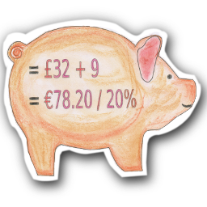
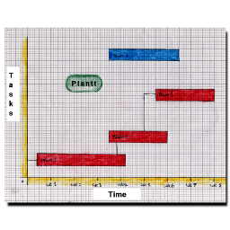

Jotter - A Text Editor
A text editor with a few advanced features for occasional programmers. Has the ability to work on more than one text file at a time.
- Uppercase, lowercase
- Set font
- Word count
- Syntax highlighting
- Tab width
- Unix or DOS file endings
- Line numbers
- Save all
- CSV: Change separators
Pages - Word Processor
Designed for creating and editing documents such as letters and reports, with less than 100 pages. Can also create simple web pages with this program.
- Formatting, page numbering, tables, pictures etc
- Bullet and number lists
- Picture bullet lists
- Outlines up to 5 levels, and nested lists
Ledger - Accounting Spreadsheet
A spreadsheet specifically designed for working with currency, and accounting calculations. For personal or small business use. Can import spreadsheets and save to them.
- Simple budgetting per account
- Tax returns, self assessment
- Payroll
- Credit card and loan calculation
- Currency conversion fields
- Invoice spreadsheet
- Purchase ledger
- Sales ledger
- Income spreadsheet
- Expenditure spreadsheet
- Business cash flow sheets
- Wages and benefits information (UK)
- VAT?
- Financial forecasts
- Graphs/Charts
- Reports
- Goalseek spreadsheets
- General sensitivity Analysis
Plantt - Project Management
A simple project management application for small businesses, and with the ability to generate to-do lists for individuals or teams.
- Tasks, subtasks
- Critical tasks/path
- Priorities
- Calendar
- Teams and personnel
- Working hours
- Best/worst deadline time
- Reports
- To do lists for teams, and team members
- Link to work sheets or specs for each project, task or subtask.
Postbox - Email Client
A program to make it easier to sift through reams of email and grabs email from web mail too.
- Search through 1 or multiple inboxes
- Supports IMAP, POP including some webmail
- Easy to use with Exchange or sendmail/postfix
- Inline attachment virus scanning
- Spam filters that learn, spam/ham
- Folders
- Projects with timeline of mail e.g. a week
- Digital signing and encryption (easy to use)
- Tor option